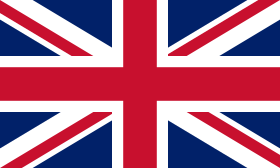

Che cosa sono i Numeri di Catalan?
 I numeri di Catalan sono una sequenza matematica fondamentale nella combinatoria, utilizzata per contare strutture discrete con una natura ricorsiva.
I numeri di Catalan sono una sequenza matematica fondamentale nella combinatoria, utilizzata per contare strutture discrete con una natura ricorsiva.
 Catalan numbers are a fundamental mathematical sequence in combinatorics, used to count discrete structures with a recursive nature.
Sono definiti dalla formula:
They are defined by the formula:
Cn = (2n)! / [(n+1)! * n!]Figura 1: Esempio di albero binario, una delle applicazioni dei numeri di Catalan.
Figure 1: Example of a binary tree, one of the applications of Catalan numbers.
Ecco i primi valori della sequenza:
- C0 = 1
- C1 = 1
- C2 = 2
- C3 = 5
- C4 = 14
- C5 = 42
Applicazioni Combinatorie
I numeri di Catalan sono sorprendentemente versatili e compaiono in numerosi contesti combinatori:
Catalan numbers are surprisingly versatile and appear in numerous combinatorial contexts:
- Alberi binari: Per contare il numero di alberi binari di ricerca con
nnodi. - Parentetizzazioni: Per determinare il numero di modi validi di aggiungere parentesi a espressioni con
n+1fattori. - Triangolazioni: Per dividere un poligono convesso con
n+2lati in triangoli. - Cammini nella griglia: Per contare i cammini dalla posizione
(0, 0)alla posizione(n, n)senza superare la diagonale principale.
Implementazione in JavaScript
Ecco un esempio di come calcolare il n-esimo numero di Catalan utilizzando una funzione JavaScript:
Here's an example of how to calculate the n-th Catalan number using a JavaScript function:
function catalanNumber(n) {
const factorial = (num) => {
return num <= 1 ? 1 : num * factorial(num - 1);
};
return factorial(2 * n) / (factorial(n + 1) * factorial(n));
}
// Esempio
console.log(catalanNumber(5)); // Output: 42Visualizzazioni
I numeri di Catalan possono essere rappresentati graficamente in vari modi:
Catalan numbers can be represented graphically in various ways:
- Alberi binari: Diagrammi che mostrano le configurazioni possibili.
- Griglie: Cammini che si mantengono sotto la diagonale principale.
- Parentetizzazioni: Diagrammi ad arco per rappresentare le combinazioni valide.
Figura 2: Esempio di un cammino nella griglia utilizzando i numeri di Catalan.
Figure 2: Example of a path in the grid using Catalan numbers.
Risorse
Ecco alcuni link utili per approfondire i numeri di Catalan:
Here are some useful links to learn more about Catalan numbers: